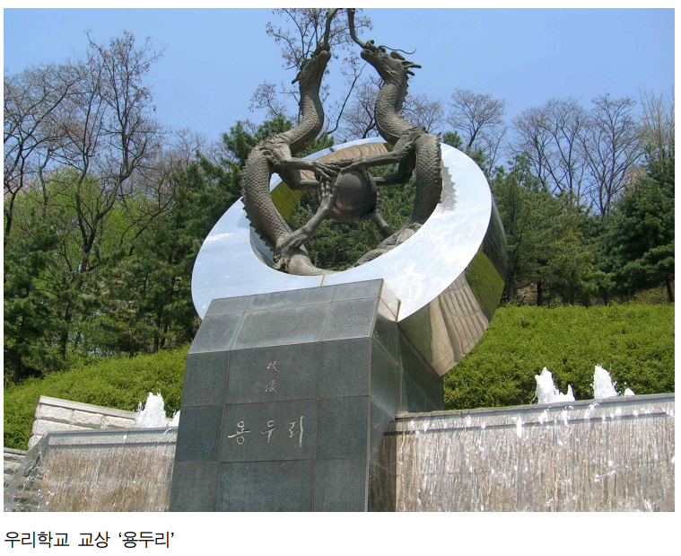
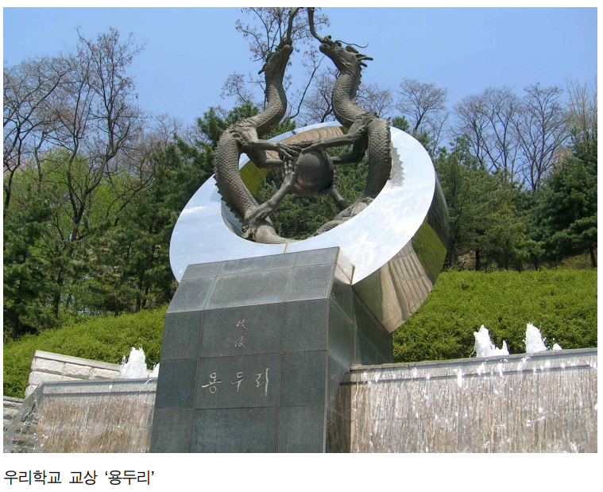

국민대학교의 역사를 한눈에! 시작합니다 :)
1. 왜 우리 학교의 이름은 '국민'으로 지어졌을까요?
국민대학교는 임시정부가 설립했다는 사실, 알고 계시나요?
임시정부가 설립한 대학인만큼 ‘국민’이란 이름이 가장 마땅했으며, 링컨의 게티스버그 연설 가운데 유명한 “국민의, 국민에 의한, 국민을 위한” 글귀에서 비롯되었을 것이라고 합니다.
2. 용두리가 어떻게 해서 우리학교의 교상이 되었을까요?
국민대학교가 교상에 대해 관심을 기울인 것은 개교 20주년이 되던 1966년에 신문사(학보사)가 이를 주도하면서부터입니다. 1970년대 초반부터 백호, 거북, 학 등이 거론되기도 했습니다.
개교 40주년을 맞아 1986년 총학생회 주도하에 ‘백호’를 교상으로 결정하였습니다. 그 후 한동안 ‘백호’를 교상으로 사용했지만, 전 국민*인의 적극적인 관심과 호응을 이끌어내지 못하여 이를 공식화시키지는 못했습니다.
1991년에 들어 대학 측에서 교상 건립에 적극성을 보이고, 총학생회장 선거 입후보자들 모두가 이를 정책공약으로 내세우는 등 분위기가 한층 고조되며 재학생을 대상으로 투표를 실시했습니다. 그 결과 ‘백호’와 ‘쌍용’ 중에서 최종적으로 ‘쌍용’이 결정되었고 교상건립추진위원회는 이를 최종적으로 확정하게 되었습니다.
3. 우리학교의 교표는 어떻게 변화해 왔을까요?
우리학교는 1948년 처음 교표가 제작되었고 그 뒤로 10여 차례 변화를 겪은 뒤 2001년 지금의 교표로 재탄생했습니다.
최초의 교표는 전체적으로 ‘국민’이 대학을 받들고 있는 형상을 갖추고 있어 대한민국 임시정부가 세운 ‘국민의 대학’임을 잘 드러내고 있습니다.
지금의 교표는 한국의 전통적 오방색(청, 백, 적, 황, 흑)을 기반으로, 바깥의 원은 우주와 세상을, 안쪽의 부드러운 곡선은 백두대간과 북악을 뜻합니다. 두 원 사이에 국민대학교를 한글과 영문으로 넣어 세계 속의 국민대학교를 표상하였습니다.
4. 우리학교를 해방 후 최초의 사립대학이라고 하는데, 사실일까요?
국민대학교는 해방 후 최초의 사립대학이 맞습니다.
현재 국민대학교의 개교기념일이 9월 1일, 10월 18일, 12월 18일 등 다양한데, 이러한 연유는 굴곡진 우리학교의 역사를 반영합니다.
1946년 9월 1일은 당시 행정적으로 신학기가 시작하는 날이고, 12월 18일은 미 군정청으로부터 학교 인가를 받아 실제 개교한 날입니다.
현재 공식적으로 개교기념식을 치르고 있는 10월 18일은 12월 18일이 추운 겨울이고 방학기간이므로 축제를 겸해 개교의 의미를 찾고자 두 달을 앞당겨 이날로 정한 것입니다.
5. 우리학교를 설립한 신익희 선생은 어떤 분일까요?
독립운동가이자 정치가인 해공 신익희는 일제강점기에 일제에 맞서 독립운동을 펼쳤고 해방 후에는 한국의 민주주의를 위해 애썼던 인물이며, 한국의 근현대사를 아우르는 역사적인 인물입니다.
해공 신익희는 대한민국 임시정부가 설립되자 이에 참여하여 임시헌법을 기초하고 초대 내무차장을 거쳐 내무총장 대리·외무총장 대리, 국무원 비서장과 임시의정원 부의장 등을 지냈습니다.
또한 1944년 5월 임정의 연립내각 성립 때 내무부장에 선임되어 활약, 1946년 대한독립촉성국민회를 결성하였으며, 1948열 8월 정부 수립 후 제헌국회 국회의장, 1947년 대한국민 당 대표최고위원과 1950년 민주국민당 위원장 등을 역임하였습니다.
6. 우리학교 내 지명과 건물명의 ‘성곡’에 대해 아시나요?
‘성곡’은 우리학교의 중흥자로서 재단 이사장을 지낸 김성곤 선생의 호입니다. 성곡은 기업인·정치인뿐만 아니라 언론인·교육인·문화인·체육인 등으로 불릴 정도로 다방면에서 활동하였습니다.
우리학교가 극심한 재정난으로 존폐의 위기를 맞을 때, 우리학교를 인수하여 되살린 인물이 성곡입니다. 1959년 10월, 재단을 인수한 성곡은 과감한 투자로 대학 재건과 발전의 초석을 다져 지금의 우리학교가 세계 속의 대학으로 발돋움할 수 있게 하였습니다.
그런 만큼 우리학교 내 건물명이 ‘성곡’과 관련된 이름을 가지게 된 것은 그를 기리기 위해 당연한 일일 것입니다.
7. 북악관 앞마당을 ‘민주광장’이라 부르는데 이유가 무엇일까요?
북악관 앞 잔디밭을 민주광장이라고 부르는데, 언제부터 이 이름으로 불렸는지는 확실치 않습니다.
다만, 이곳은 1970, 80년대 학생운동 집회 장소였으며, 이청수·김윤기 열사 기념비가 자리하고 있습니다. 또한 각종 시국 토론회 및 출정식, 시국 풍자 마당극 등이 이곳에서 펼쳐졌습니다.
민주화운동에 참여했던 동문, 선배의 희생과 노고를 다시 한번 생각해 보고, 그 정신을 기리는 장소로서 민주광장을 기억하였으면 합니다.
8. 어떻게 정릉에 우리학교 캠퍼스가 자리를 잡게 되었을까요?
초기의 창성동 캠퍼스는 청와대 진입로에 위치하고 있어 더 이상의 확장이 불가능하여 캠퍼스 이전이 당시 문제였습니다.
성곡은 ‘시간이 좀 늦더라도 백년대계로 땅을 바로잡아야 한다’는 철학을 갖고 있어, 여러 군데를 직접 답사하기도 하며 캠퍼스 선택에 신중을 기했습니다.
성곡은 ‘과연 여기에 학교의 전당을 지어서 좋으냐, 나쁘냐’ 하는 것을 기준으로 교지를 선택하고자 했으며 심사숙고를 통해 정릉을 최종적인 새로운 캠퍼스 지역으로 확정하였습니다.
9. 왜 건물명이 1호관, 2호관에서 본부관, 북악관 등으로 바뀌었을까요?
정릉 캠퍼스가 문을 열면서 지어지는 건물은 대부분 신축되는 순서에 따라 이름을 명명했습니다.
2001년 5월 일부 건물명이 변경되었는데, 개선된 이름은 본관→본부관, 2호관→북악관, 3호관→과학관, 4호관→조형관, 5호관→형설관, 6호관→국제교육관 등으로 용도 중심으로 조정되었습니다.
10. 이러한 역사들을 둘러볼 수 있는 곳이 우리학교 내에 있을까요?
네, 우리학교의 역사를 둘러볼 수 있는 박물관은 성곡도서관 5층에 위치해 있습니다.
국내 200개에 달하는 4년제 대학 가운데 박물관이 있는 대학은 그 반절인 100여 개뿐이며, 우리학교 박물관은 그 중에 하나로서 종합 교육박물관의 성격을 지니고 있습니다.
지금까지 간략히 국민대학교의 역사를 둘러보셨는데, 어떠셨나요?
앞으로도 국민대학교의 역사가 궁금하시다면, 기록물관리위원회를 찾아주세요 :)